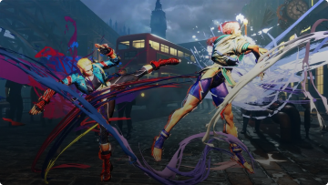
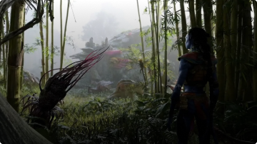
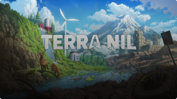
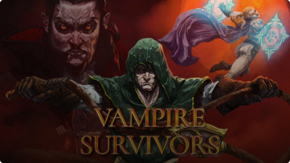
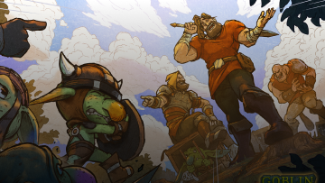
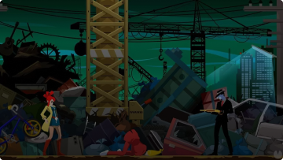
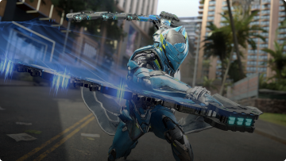

Forspoken a pesar de su decepcionante extreno lanza su DLC con fecha de estreno para PS5 y PC
05/04/2023
noticia
Hogwarts Legacy es el juego más vendido de lo que llevamos de 2023 en Estados Unidos
03/04/2023
noticia
La comunidad de Call of Duty:
¿Por qué cae en audiencia Warzone 2.0?
01/04/2023
noticia
Todo sobre el nuevo parche 6.4 del Final Fantasy XIV: The Dark Throne
31/03/2023
noticia

Street Fighter 6 revela un nuevo gameplay protagonizado por Cammy y Manon
30/03/2023
noticia

Se filtran detalles sobre Avatar Frontiers of Pandora
29/03/2023
noticia

Ya puedes jugar en Netflix con su nueva propuesta: Terra Nil
28/03/2023
noticia

Ya tiene fecha la nueva expansión de Vampire Survivors
27/03/2023
noticia

Los Goblin se han dispuesto a vengarse en Goblin Stone
24/03/2023
noticia

Capcom anuncia una nueva version en HD de Ghost Trick Detective Fantasma
23/03/2023
noticia

Exoprimal lanza su beta para PC, XBOX y PlayStation
22/03/2023
noticia